Аня, 11 класс
Панический страх перед устной частью и сильный языковой барьер. За три месяца усиленной практики отработали структуру ответов — страх ушёл, появилась уверенность в своих силах.
Устная часть20 из 20
Основной набор на учебный год идёт в августе — к сентябрю свободных мест обычно не остаётся.
Аттестованный эксперт ЕГЭ и ОГЭ: знаю критерии изнутри и вижу, где именно теряются баллы. Составляю план подготовки до самого экзамена — и родители всегда в курсе, как идут дела.
Наиболее частый результат учеников: 90+
Бесплатно, 30 минут, онлайн.
Цифры по выпускникам, которых я готовила к ЕГЭ по английскому с 2010 года.
81
минимальный балл у тех, кто занимался год и дольше
90+
наиболее частый результат учеников
95%
поступили в выбранный вуз
83%
сдали на 80+ баллов
61%
сдали на 90+ баллов
29
учеников поступили в зарубежные вузы
До подготовки: «Я в растерянности. Ничего не получится». После: «Я готов. Я знаю, что делать. Я справлюсь».
Как это выглядит в отдельных историях
Аня, 11 класс
Панический страх перед устной частью и сильный языковой барьер. За три месяца усиленной практики отработали структуру ответов — страх ушёл, появилась уверенность в своих силах.
Устная часть20 из 20
Марк, 11 класс
На старте — почти нулевая грамматика и полная путаница во временах. К экзамену решал практически безошибочно, причём не только грамматику, но и словообразование.
С нуляк сильной грамматике
Полина, 11 класс
Цель — бюджет в МГИМО. В сентябре пробник на 78 баллов. Благодаря чёткому плану и методике значительно улучшила результат.
78 на пробнике98 на ЕГЭ
← →
Более 500 учеников с 2010 года. Работаю и с теми, у кого хорошая база и цель 90+, и с теми, кому нужно системно поднять результат со среднего или начального уровня — это две разные задачи, и обе решаемы.
Все разделы по плану до экзамена: аудирование, чтение, грамматика, письмо и устная часть. Пробники с разбором по критериям. Индивидуальный план подготовки с учётом уровня и целей ученика — от диагностики до уверенной сдачи экзамена.
ОГЭ - генеральная репетиция ЕГЭ. Практически одинаковый формат и критерии. Уже на этом этапе уходит языковой барьер. Часто это первый экзамен в жизни — работаем и с ним, и с тревогой.
Вместо заучивания правил — внятные объяснения, много разговорной практики и, как результат, свободное владение языком к окончанию школы.
Серьезный опыт: более 25 лет в профессии, два высших образования – лингвистическое и филологическое, международная квалификация, эксперт ЕГЭ, проверяю и оцениваю сотни работ ежегодно.
Я эксперт ЕГЭ. Ученик получает разбор работ по критериям — не «примерно так», а буквально по пунктам: где потерян балл, за что он снят и что изменить, чтобы в июне это не повторилось.
Вижу верхнюю планку языка и понимаю, что отделяет крепкие 80 от 95. Если цель высокая, работаем именно с этой разницей, а не «повторяем всё подряд».
Международный золотой стандарт преподавания: CELTA получают, проводя реальные уроки под наблюдением экзаменаторов Кембриджа. Плюс 10 лет в лингвистическом вузе. Знать язык и уметь научить — разные вещи; у меня подтверждено и то, и другое.
Татьяна Михайловна Генина
Десять лет в лингвистическом вузе, кембриджская методическая подготовка CELTA, постоянное повышение квалификации, аттестованная экспертиза в ЕГЭ и тысячи проверенных работ. К экзаменам готовлю с 2010 года; сотни учеников; 95% выпускников поступают в выбранный вуз — но начинается всё с того, что подросток перестаёт бояться предмета.
30 минут: смотрим текущий уровень, обсуждаем цель и сроки. Вы получаете честный прогноз.
Расписываю, что и когда мы проходим, чтобы к маю были закрыты все разделы. Вы видите этот план.
Разбор темы, практика, домашняя работа. Каждую письменную работу проверяю по критериям экзамена.
Полный формат в реальном времени. К экзамену обстановка уже привычная — и это снимает половину тревоги.
Самый частый страх родителя — заплатить и не понять, изменилось ли что-нибудь. Поэтому прогресс у нас измеряемый: первый пробник через 2–3 месяца, дальше ещё несколько за курс. Мы просто сравниваем баллы. Если роста нет — разбираемся почему и меняем подход, а не ждём мая.
Если до экзамена осталось мало времени — скажу честно, что реально успеть. С 65 до 80 за три месяца — да. С 40 до 90 — нет, и я не буду это обещать. На диагностике вы получите реалистичный прогноз, а не удобный ответ.
На занятии ученик может ошибаться, не боясь критики и давления. Ошибка — это информация о том, что делать дальше, а не повод стыдить. Я верю, что каждый способен на большее, и создаю условия, в которых расти комфортно.
Я не сторонник вседозволенности. Если задание не сделано или ученик не прикладывает усилий, я об этом скажу — спокойно и без давления. Дисциплина и ответственность обязательны: без них результата не будет.
Моя задача — не только дать знания, но и научить работать самостоятельно, брать ответственность за результат и чувствовать себя на занятиях уверенно.
Экзамен сдаёт ребёнок, но тревожно обычно всей семье.
Вот что я
беру на себя.
Коротко: что прошли, что получается, над чем работаем дальше и как идут пробники. Без педагогических формулировок — по-человечески.
Контроль за выполнением за домашних заданий, сроками и подготовкой к пробникам — моя часть работы. Вам не придётся напоминать и проверять.
Ошибки показывают, над чем нужно работать и куда двигаться дальше. Разбираем каждый недочет, закрепляем на практике и постепенно превращаем слабые места в уверенные навыки.
Критерии, которые считаю правильными.
Опыт работы именно с этим экзаменом, а не «общий английский»
Готовлю к ЕГЭ и ОГЭ с 2010 года, аттестованный эксперт ЕГЭ.
Репетитор должен знать структуру экзамена и критерии оценивания
Спросите меня на диагностике о любом задании — разберу по баллам и критериям.
Работает по проверенным пособиям, а не по «уникальной авторской методике»
Все пособия и материалы одобрены ФИПИ — институтом, курирующим ЕГЭ.
Даёт родителям регулярную обратную связь о прогрессе
Короткий отчёт раз в месяц: что прошли, что получается, над чем работаем дальше.
Не обещает конкретный балл до того, как увидел ученика
Показываю результаты прошлых учеников, но не обещаю баллы будущим. Есть план и детальная стратегию.
Оба формата — онлайн.
Программа под конкретные пробелы
Темп подстраивается — можно останавливаться сколько нужно
Максимум разговорной практики за занятие
Вопросы между занятиями — в чате
Разговорная практика между участниками, а не только со мной
Группа собирается по уровню — никто не тянет и не отстаёт
Запись занятия, если пропустили
Дешевле индивидуального формата
← →
Как формируется стоимость
Цена зависит от формата, частоты занятий и того, сколько времени осталось до экзамена. Назвать её заранее, не понимая задачу, — значит назвать наугад.
Обсудим на бесплатной диагностике, когда я увижу уровень и цель. Вы будете точно знать, за что платите.
Я беру ограниченное число учеников в год, чтобы вести каждого лично.
Отзывы — как есть. Ничего не переписано и не сокращено.
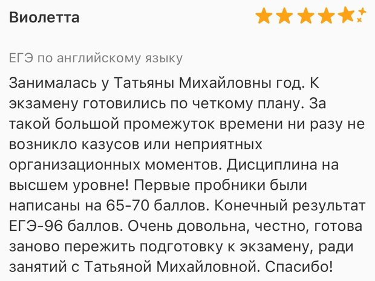
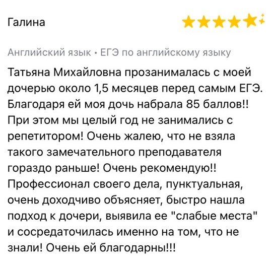
Татьяна Михайловна отличный преподаватель. К ребёнку нашла подход с первых занятий. Заниматься с ней комфортно. А главное у моей дочери исчез языковой барьер, и она перестала стесняться говорить.
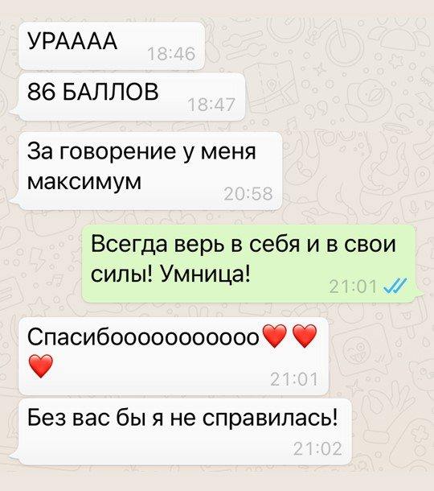
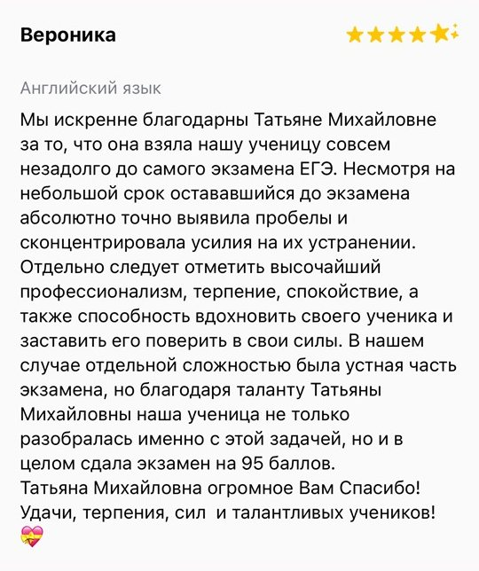
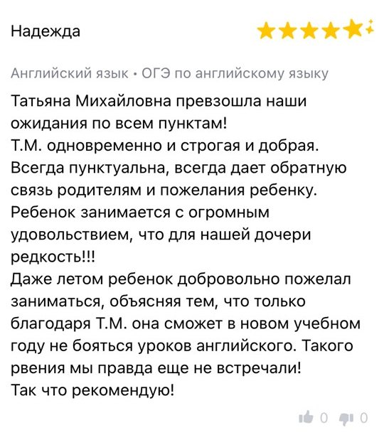
Замечательный репетитор английского языка. Ребёнок стеснительный, но с Татьяной Михайловной занимается с удовольствием. Спустя три месяца занятий уровень знаний заметно вырос. Продолжаем заниматься. Усиленно готовимся к ОГЭ.
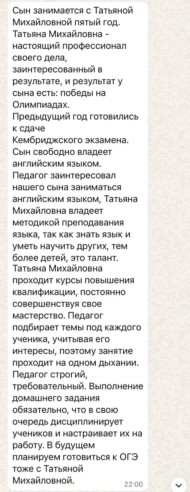
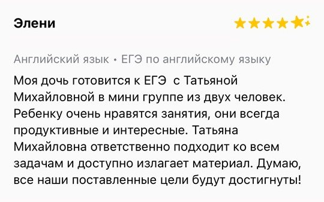
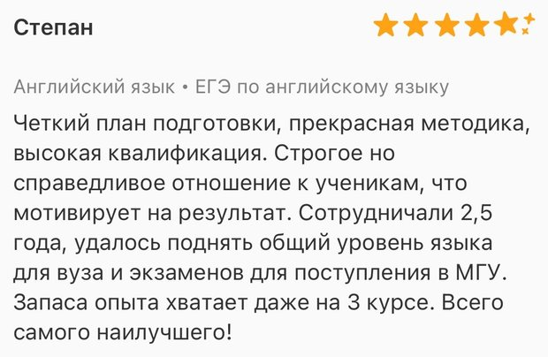
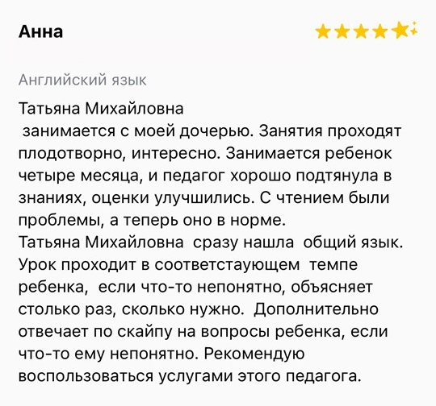
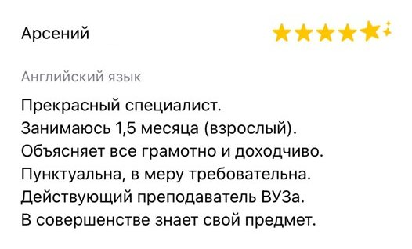
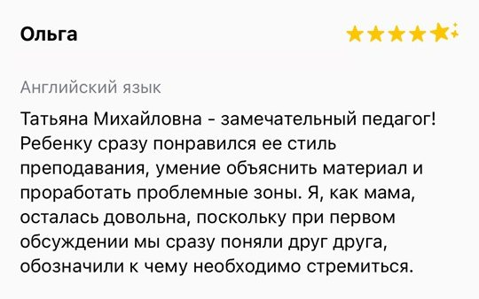
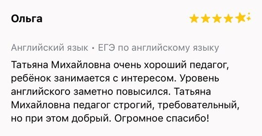
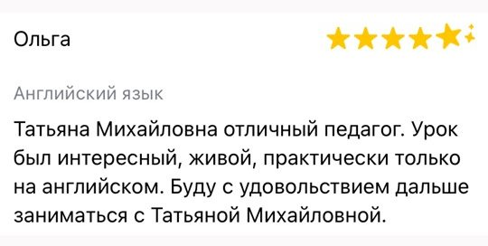
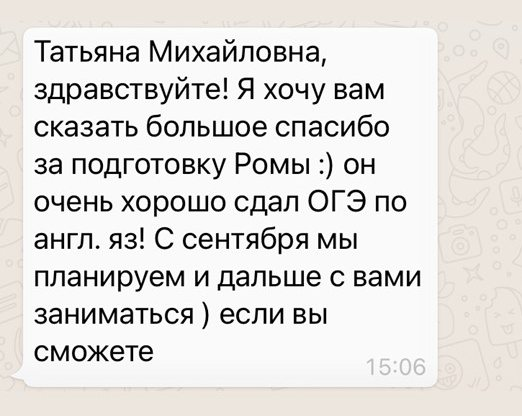
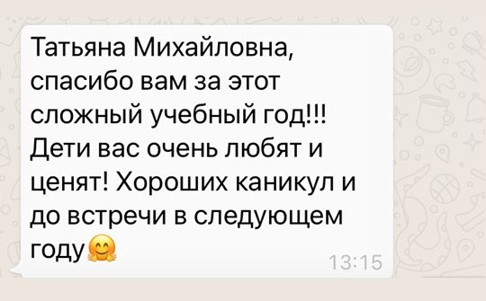
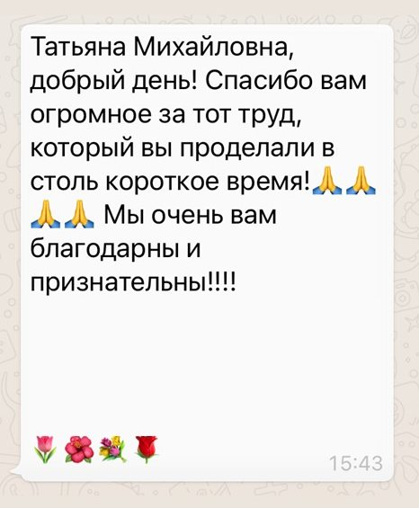
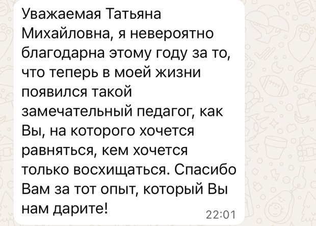
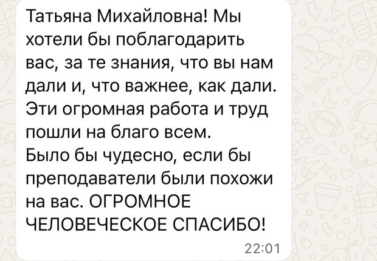
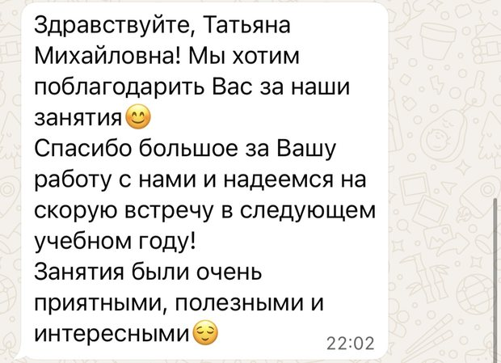
Оптимально — с 10 класса, чтобы спокойно разобрать все темы, отработать формат экзамена и оставить время на регулярные пробники.
Да, если заниматься системно и регулярно. Сначала проводится диагностика, затем составляется индивидуальный план с учётом уровня ученика и желаемого результата.
Да, в процессе подготовки ученики регулярно выполняют пробники в формате реального экзамена, после чего мы разбираем ошибки и определяем дальнейшие шаги.
Начинаем с базовых тем и постепенно выстраиваем фундамент: грамматика, лексика, чтение, аудирование и навыки устной и письменной речи.
Запишитесь на диагностическую встречу: мы оценим текущий уровень, обсудим цель и сроки, а также составим реалистичный план работы.
По баллам пробников, а не по ощущениям. Первый — через 2–3 месяца, дальше ещё несколько за курс, и вы видите динамику в цифрах. Плюс ежемесячный отчёт. Школьные оценки показателем не считаю: они зависят от учителя, а не от готовности к экзамену.
Зависит от того, откуда стартуем. С 65 до 80 за три месяца — реально. С 40 до 90 — нет, и я не стану это обещать. На диагностике я скажу прямо, что достижимо к вашей дате, даже если ответ вам не понравится.
Обычно два. Одного для экзамена мало — материал не успевает закрепиться между встречами. Трёх для школьника с полной нагрузкой может быть много. Будет уставать и начнет пропускать домашние работы.
Посмотрим текущий уровень, обсудим цель и сроки.
Узнаете
реальный прогноз.